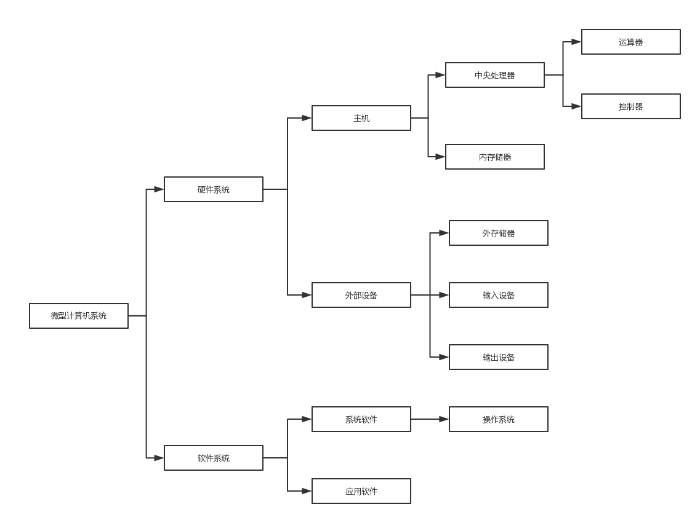

计算机知识
到尾部
什么是计算机？
为啥叫电脑？
计算机有什么用？
第一台计算机诞生
计算机发展
计算机系统组成
软件系统
中央处理器（CPU）
二进制的性质
数据及其单位
操作系统的功能
计算机是一个概念，也是一个大类的统称。
我们平时所说的电脑，是计算机的一种，专业术语称之为微型计算机。注意电脑的“脑”字，就是指它其实是对人脑的一种模拟。比如可以像我们大脑一样控制嘴巴吃饭，控制腿脚走路等等。
方便工作。像用excel做表格、用word写文档等。娱乐生活。像打游戏、听音乐、看电影等等，这个不用多说了吧。总之我们的方面方面已离不开计算机。那么了解完这些知识，下面开始正式学习。
1946年，人类第一台电子数字计算机ENIAC（Electronic Numerical Integrator And Calculator）在 美国宾夕法尼亚大学诞生。
依据计算机所采用电子器件的不同，计算机发展可划分为电子管、晶体管、集成电路、超大规模集成电路，一共4代，一代更比一代强。
一个完整的计算机系统包括硬件系统和软件系统两大部分。（1）硬件系统一般指用电子器件和机电装置组成的计算机实体。
就是我们肉眼所见的实体。如：电源、显示器、主机箱等等。 组成微型计算机的主要电子部件都是由集成度很高的大规模集成电路及超大规模集成电路构成的。这里“微”的含义是指微型计算机的体积小。微型化的中央处理器称为微处理器，它是微型计算机系统的核心。 微处理器送出三组总线：地址总线（AB）、数据总线（DB）和控制总线（CB）。其他电路（常称为芯片）都可连接到这三组总线上。由微处理器和内存储器构成微型计算机的主机。此外，还有外存储器、输入设备和输出设备，它们统称为外部设备。（2）计算机软件是指在硬件设备上运行的各种程序以及有关说明资料的总称。
所谓程序，实际上是用户用于指挥计算机执行各种动作以便完成指定任务的指令的集合。用户要让计算机做的工作可能是复杂的，因而指挥计算机工作的程序也可能是很庞大而复杂的，有时还可能要对程序进行修改和完善，因此为了便于阅读和修改，必须对程序作必要的说明或整理出有关的资料。 就是我们使用的程序。如：音乐软件、游戏软件、百度网等等。请看计算机系统组成示意图：

{kind=link}
一、软件分类
（1）系统软件
指管理、监控和维护计算机资源（包括硬件和软件）的软件。主要包括操作系统、各种程序设计语言及其解释和编译系统、数据库管理系统等。（2）应用软件
它是用户利用计算机及其提供的系统软件为解决各类实际问题而编制的计算机程序。由于计算机的应用已经渗透到各个领域，所以应用软件也是多种多样的。例如科学计算、工程设计、文字处理、辅助教学、游戏等方面的程序。
之所以称之为处理器，那它必然要去处理、去干一些事的。 微处理器芯片有许多性能指标，其中主要是字长（即位数）和主频。 字长较长的微型机有更大的寻址空间，能支持数量更多、功能更强的指令，在相同时间内能处理和传送更多的信息，使机器有更快的速度。 一句话：字长数和主频数越大越好。
（1）可行性
采用二进制，它只有0和1两种状态，这在物理上是极易实现的。例如，电平的高与低、电流的有与无、开关的接通与断开、晶体管的导通与截止、灯的亮与灭等两个截然不同的对立状态都可用来表示二进制。计算机中通常采用双稳态触发电路来表示二进制数，这比用十稳态电路来表示十进制数要容易的多。（2）简易性
二进制数的运算法则简单。例如二进制数的求和法则只有以下3种： 0+0=0 0+1=1+0=1 1+1=10（逢二进一） 而十进制数的求和法则却只有一百多种。因此，采用二进制可以使计算机运算器的结构大为简化。（3）逻辑性
由于二进制数符1和0正好与逻辑代数中的真（true）和假（false）相对应，所以用二进制数来表示二值逻辑进行逻辑运算是十分自然的。（4）可靠性
由于二进制只有0和1两个符号，因此在存储、传输和处理时不容易出错，这使计算机具有的高可靠性得到了保障。
数据是可由人工或自动化手段加以处理的那些事实、概念、场景和指示的表示形式，包括字符、符号、表格、声音、图形和图像等。数据可在物理介质上记录或传输，并通过外围设备被计算机接受，经过处理而得到结果。 数据能被送入计算机加以处理，包括存储、传送、排序、归并、计算、转换、检索、制表和模拟等操作，以得到人们需要的结果。数据经过加工并赋予一定的意义后，便成为信息。 计算机系统中的每一个操作，都是对数据进行某种处理，所以数据和程序一样，是软件工作的基本对象。数据的单位
（1）位（bit）
计算机中最小的数据单位是二进制的一个位数，简称为位（bit，比特）。计算机中最直接、最基本的操作就是对二进制位的操作。一个二进制位可表示两种状态（0或1）。两个二进制位可以表示四中状态（00，01，10，11）。位数越多，所表示的状态就越多。 （2）字节（Byte） 为了表示数据中的所有字符（字母、数字以及各种专用符号，大约有256个），需要用7位或8位二进制数。因此，人们选定8位为一个字节（Byte），通常用B表示。1个字节由8个二进制数位组成。 字节是计算机中用来表示存储空间大小的最基本的容量单位。例如，计算机内存的存储容量、磁盘的存储容量等都是以字节为单位表示的，（3）字（word）
字是由若干字节组成的（通常取字节的整数倍）。字是计算机进行数据存储和数据处理的基本运算单位。 字长是计算机性能的重要标志，它是一个计算机字所包含的二进制位的个数。不同档次的计算机有不同的字长。按字长可以将计算机划分为8位机、16位机、32位机、64位机。字符编码
计算机中，对非数值的文字和其他符号进行处理时，要对文字和符号进行数字化处理，即用二进制编码来表示文字和符号。字符编码就是规定用怎样的二进制编码来表示文字和符号。（1）ASCII码
ASCII码有7位版本和8位版本两种。国际上通用的是7位版本。7位版本的ASCII码有128个元素，其中通用控制字符34个，阿拉伯数字10个，大、小写英文字母52个，各种标点符号和运算符号32个。7位版本ASCII码只需用7个二进制位（2的7次方等于128）。 当微型计算机上采用7位ASCII码作为机内码时，每个字节只占后7位，最高为恒为0。（2）汉字编码
由于汉字是象形文字，数目很多，常用汉字就有3000~5000个，加上汉字的形状和笔画多少差异极大，因此不可能用少数几个确定的符号将汉字完全表示出来，或像英文那样将汉字拼写出来。每个汉字必须有它自己独特的编码。 常见的编码格式有：GB2312
{kind=link}
（1）处理器管理
主要解决对CPU的分配调度策略、分配实施和资源回收等问题。CPU是计算机系统中的关键性资源。（2）存储管理
存储管理主要管理内存资源，根据用户程序的要求给它分配内存，保护用户存放在内存中的程序和数据不被破坏，同时存储管理还解决内存的扩充问题。（3）设备管理
负责管理各类外围设备，解决文件的共享、保密和保护问题，包括分配、启动文件管理、支持文件的存储、检索和修改等操作。（4）文件管理
在现代计算机系统中，操作系统不仅把程序、数据等各种信息，甚至把外设都当做文件来管理。通过文件系统的管理，把存储量很大，但不易使用的外存储器改造成为按名存取、方便灵活、又可共享的文件空间。（5）作业管理
为用户提供一个使用系统的良好环境，根据不同的系统要求，制订相应的调度策略，进行作业调度。